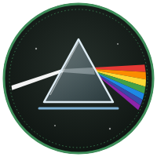

Laboratório de Mecânica · Licenciatura em Física

Trilhas de Aprendizagem
Trilhas de Aprendizagem são percursos de estudo construídos para orientar, apoiar e avaliar a sua caminhada pelo mundo da Física.
O endereço do site, a contribuição da música instrumental durante o estudo e os créditos estão nas abas da lateral esquerda.
Escolha uma trilha e faça os objetos de aprendizagem na ordem numerada, sem pular nenhum — a ordem segue como o cérebro aprende. Se pulou, volte.
Sucesso no seu estudo.
T0A · Primeiros Passos no Laboratório
Pré-Lab · fazer em casa, antes do encontro
Lab · na bancada, com o professor · 100 min
Sugestões de aprimoramento